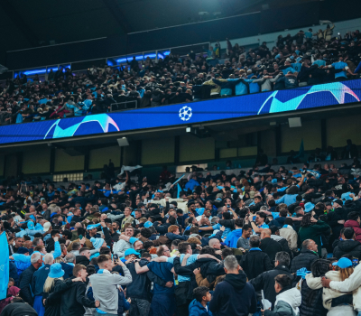
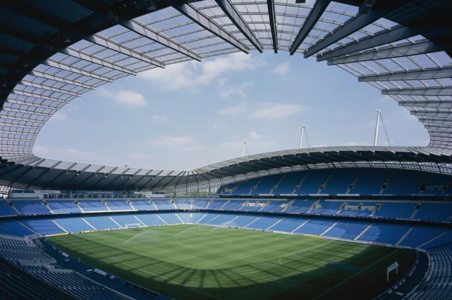
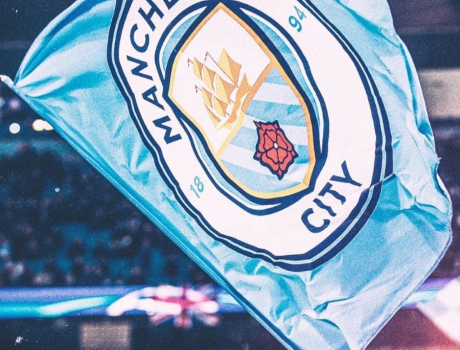
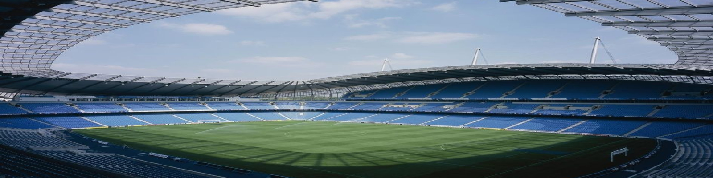
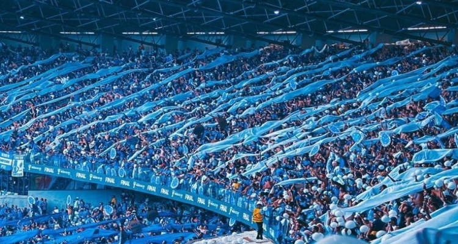

CLUB
CLUB
Manchester City Football Club is an English professional football club based in Manchester that competes in the Premier League, the top flight of English football.
- 
- 
- 
- ONE CLUB FOR ALL
-
Throughout its proud history, our football club has built a deep, lasting kinship with communities in Manchester and in cities further afield.
The fans show it in their unwavering passion for the Club we show it through our dedication to building, for them, the successful and sustainable football club for the future.
It is a responsibility that the Club is honored to shoulder.
We are immensely proud of the steadfast support of our fans and we remain committed to working closely with them in order to further our footballing ambitions.
ETIHAD STADIUM
- 
- IN THE STADIUM
-
Turnstiles open 2 hours before kick-off. We host guest music playlists from our celebrity fans to get you ready for the match.
The last 15 minutes before kick-off really ramp up to get everyone ready and in good voice for the team walking out. Look out for our 1894 fan group in South Level 1 providing flags, colour and noise!
-
- FOOD & BEVERAGE
-
Food outlets are available on the East & West side of the Stadium.
The Summerbee Bar has also been relocated to the East Stand open 3 hrs before the match and 1hr after the final whistle.
There is a range of hot & cold options including vegan & halal options.
- 
- PLAY MAKERS
-
Look out for our Playmakers dressed in yellow they are around the stadium and in the Family Stand.
They are there to help and if you have any questions please ask as they are only too happy to help. They are regularly stocked with free goodies and treats for all so give them a smile.
- ETIHAD STADIUM DEVELOPMENT
-
Over the next three years we will be developing a best-in-class fan experience and year-round entertainment and leisure destination at the Etihad Stadium.
Our plans include several connected all-weather facilities, fully integrated into the stadium, centred around an expanded North Stand with one larger, single upper tier above the existing lower tier, increasing capacity to over 60,000.
A covered City Square fan zone, with capacity for 3,000 people and a wide variety of food and drink outlets, a new club shop, museum, workspace and a 400-bed hotel will also be constructed.
This page will be regularly updated with everything you need to know when visiting the Etihad Stadium this season.